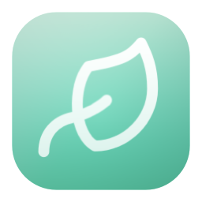

Docktor
Customize Dock icon click, double-click, and scroll actions, including App Exposé (show all windows for that app), Bring All to Front, Hide App, Hide Others, Minimize All, Quit App, Activate App, and Single App Mode.
Docktor ships with double click mapped to App Exposé, so double clicking a Dock icon shows all open windows for that app.
Or install via Homebrew:
brew tap apotenza92/tap
brew install --cask apotenza92/tap/docktor
Beta Version: You are downloading a preview build.
Beta installs side by side and may contain bugs or incomplete changes.
Enjoying the app?